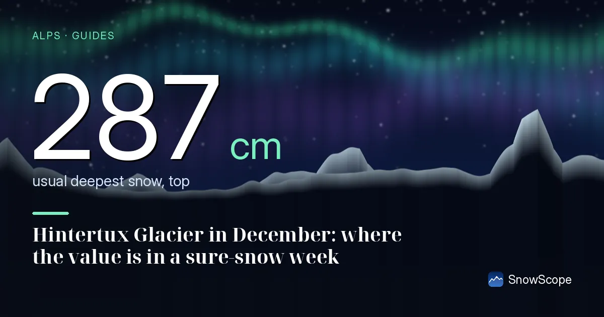

Hintertuxer Gletscher فدجنبر: فين كاينة القيمة فسيمانة مضمونة
الرقم المهم الأول: نهار 15 دجنبر عادي، الفوق ديال Hintertuxer Gletscher (3245 م) فيه 98 سم ديال التلج فالتاريخ ديالنا ديال 46 شتوة، وفسيمانة 15 حتى 21 دجنبر كل شتوة بلا استثناء كان فيها 30 سم ولا كثر لفوق. يعني السؤال ماشي على التلج، السؤال على الثمن وعلى التحت ديال الجبل.
شوف توقعات التلج مباشرة ديال Hintertuxer Gletscher فالتطبيق ديال SnowScopeالعلو ديال التلج، التنبيهات والخريطة 3D، فابور.
التلج: مزيان
Hintertux من القلال ديال البلايص فالألب فين التلج ديال دجنبر تقريبا مضمون لفوق. فالوسط (2372 م) نهار 15 دجنبر عادي فيه 52 سم، و 87 % من الشتوات كان فيهم 30 سم ولا كثر فسيمانة 15 حتى 21 دجنبر؛ وفسيمانة نوال 93 %.
كاينين عوام ضعاف، ولكن حتى فيهم الكلاسيي خدام: فشتوة من 10 الفوق فيه غير 44 سم نهار 15 دجنبر. الشتوة اللي فاتت، وكانت ضعيفة، كان فيها 44 سم لفوق فهاد النهار.


الثمن: واضح
اللائحة الرسمية ديال 2026-27 فيها ثمن واحد للموسم كامل: السكيباس ديال نهار للكبار 82 EUR وديال 6 أيام 399 EUR. ما كاينش ثمن رخيص قبل نوال، يعني دجنبر هنا ماشي أرخص من فبراير.
التوفير الحقيقي للعائلات: حسب اللائحة الرسمية، الدراري اللي تزادو من بعد 1 يناير 2021 كيتزلجو فابور مع واحد كبير (خاص الوراق). لعائلة فيها درّي صغير هادشي كيفرق كثر من أي تخفيض.
العلو ومسألة الكلاسيي
النقطة الضعيفة هي الواد. أول تيليسييج ف 1500 م، فين نهار 15 دجنبر عادي فيه 16 سم وغير 7 % من الشتوات كان فيهم 30 سم فسيمانة 15 حتى 21 دجنبر. النهار العادي اللي كيوصل فيه التحت ل 30 سم هو 7 يناير. فدجنبر كتزلج لفوق وكتهبط بالتيليفيريك.
الاتجاه مخلط. فالوسط المعدل ديال دجنبر نزل من 54 سم فأول 15 شتوة ل 45 سم فآخر 15، أما لفوق بقى صامد (95 و 101 سم). الكلاسيي كيحفظ دجنبر؛ والخسارة كتبان لتحت.
مقارنة مع Kitzsteinhorn (Kaprun)
Kitzsteinhorn فوق Kaprun عندو نفس الشكل: 137 سم فالفوق ديالو ف 3024 م نهار 15 دجنبر عادي، 40 سم فالوسط (1894 م) وتقريبا والو فالتحت ف 765 م (6 سم). الأثمنة تما أغلى: 82 EUR للنهار فالموسم الكبير و 440 EUR ل 6 أيام، ولا 74 EUR و 396 EUR فبداية الموسم.
نفس الثمن ديال النهار، سيمانة أرخص وتلج كثر فالوسط ف Hintertux (52 سم مقابل 40 سم). لسكيباس ديال 6 أيام فدجنبر، Hintertux هو الأحسن بين الجوج.
قبل ما تحجز
Hintertux ماشي أرخص دجنبر فالنمسا، ولكن بالثمن ديالو هو الأضمن لفوق. ختارو إلا عندك غير سيمانة وحدة، تواريخ ثابتة وما بغيتيش تقامر بالتلج. إلا تقدر تتسنى توقعات مزيانة، قرية عالية بثمن ديال قبل نوال تقدر تكون أرخص.
نصايح للي كيتزلجو
- فدجنبر خطط تتزلج فالنص الفوقاني (من تقريبا 2372 م) وهبط بالتيليفيريك: البيستات ديال الرجوع نادرا فيهم التلج.
- دي الوراق ديال الدراري اللي تزادو من بعد 1 يناير 2021: كيتزلجو فابور مع واحد كبير.
- كلاسيي ف 3245 م يقدر يكون بارد بزاف وفيه الريح فدجنبر: دي حاجة للوجه وليزغون زايدين.
- خارج البيست فالكلاسيي كاينين الشقوق: غير مع گيد ومن بعد النشرة ديال الانهيارات ديال Tirol.
خرائط أخرى (مواقع خارجية)
المراجع والمصادر
- Hintertuxer Gletscher: official lift-pass prices (2026-27), checked 13 November 2026 www.hintertuxergletscher.at/en/tickets-rates/tickets-rates/rates-hintertux-glacier/
- Kitzsteinhorn (Kaprun): official lift-pass prices (2026-27), checked 13 November 2026 www.kitzsteinhorn.at/en/tickets-prices/ski-board
على هاد الأرقام
الأرقام ديال التلج: التاريخ ديال التلج ديال SnowScope، 46 شتوة اللي فاتت (1980-81 حتى ل 2025-26) فالعلوات ديال المحطة، مصحح بالعلو (تقدير لمنطقة، ماشي البلاغات ديال المحطة)؛ «تلج مزيان» = 30 سم ولا كثر فالأرض فالمعدل ديال السيمانة. الخريطة: العلو العادي ديال التلج نهار 15 دجنبر موزع على التضاريس حسب العلو. البيستات والتيليسييجات: OpenSkiMap. الأثمنة ديال السكيباس: اللوائح الرسمية ديال المحطات، متشافة نهار 13 نونبر 2026؛ الأثمنة تقدر تتبدل.
النشرات الرسمية ديال الانهيارات: Avalanche.report – Euregio Tyrol
كيفاش تستاشهد بهاد المقال
للبحث، التعليم ولا الصحافة: الأرقام والرسومات تقدر تعاود تخدم بيهم بحرية تحت CC BY 4.0 مع هاد الاستشهاد.
SnowScope (2026), Hintertuxer Gletscher فدجنبر: فين كاينة القيمة فسيمانة مضمونة, https://snowscope.app/blog/ar/2026/11/hintertux-glacier-december-value-ski-week.html, تشاف ف 2026-11-14
SnowScope (Atlas Labs). (2026, November 14). Hintertuxer Gletscher فدجنبر: فين كاينة القيمة فسيمانة مضمونة. SnowScope snow reports. https://snowscope.app/blog/ar/2026/11/hintertux-glacier-december-value-ski-week.html
BibTeX
@misc{snowscope2026hintertuxglacierdecember,
author = {{SnowScope (Atlas Labs)}},
title = {Hintertuxer Gletscher فدجنبر: فين كاينة القيمة فسيمانة مضمونة},
year = {2026},
month = nov,
howpublished = {\url{https://snowscope.app/blog/ar/2026/11/hintertux-glacier-december-value-ski-week.html}},
note = {Published 2026-11-14 13:29 UTC; accessed 2026-11-14}
}· CC BY 4.0 · الطريقة، الداتا والأدوات →
Hintertuxer Gletscher: التلج والحرارة حسب العلو، هاد الشتا مقارنة مع اللي فاتت (الأدوات) →
تابع Hintertuxer Gletscher
فابور: ميساج ملي يجي التلج، والتوقعات كل صباح.